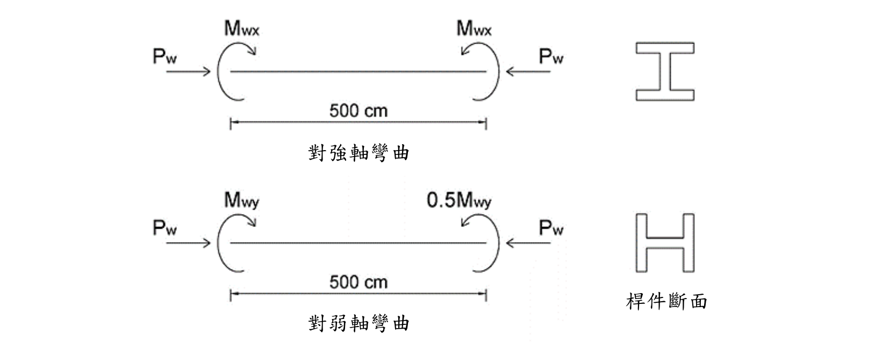

考題編號：SS-2020-3
主分類： SS-U1-3 梁柱桿件
副分類： 無
設計法： LRFD
標籤： 梁柱桿件 P-M互制 雙軸彎矩 載重放大係數 B1放大法 有效長度 柱強度 切線係數公式 弱軸彎矩 LRFD互制方程式
1. 原始題目重述 (Problem Restatement)
有一梁柱桿件承受端點載重如下圖所示：
- 軸力：$P_w = 150$ tf
- 強軸彎矩：$M_{wx} = 6$ tf·m（兩端皆施加，強軸單曲率）
- 弱軸彎矩：$M_{wy}$（一端 $M_{wy}$，另一端 $0.5M_{wy}$，弱軸單曲率）
- 桿件長：$L = 500$ cm
- 斷面：H 400×400×12×22
- 側向支撐：桿件兩端皆有側向支撐
- 有效長度係數：$K_x = 1.8$，$K_y = 1.2$
- 材料強度：$F_y = 2.5$ tf/cm²，$E = 2100$ tf/cm²
- 載重係數：$r = 1.6$
試依極限設計規範，求弱軸尚可承受之最大彎矩 $M_{wy}$。（25 分）

圖說：強軸（上圖）：桿件承受等值端彎矩 $M_{wx}$（兩端大小相等、方向使桿件呈單曲率），軸壓力 $P_w$ 由兩端對向施加，桿長 500cm；弱軸（下圖）：兩端分別施加 $M_{wy}$（大端）和 $0.5M_{wy}$（小端），同向（單曲率），軸壓力 $P_w$ 相同。桿件兩端均設有側向支撐。
2. 考題核心精神與出題者意圖 (Core Concepts & Examiner's Intent)
核心觀念：LRFD 梁柱互制方程式 + B1 放大係數 + 載重係數轉換
本題三層考核：
- 載重係數 $r = 1.6$：工作載重（$P_w, M_{wx}, M_{wy}$）乘以 $r$ 得設計載重（$P_u, M_{ux}, M_{uy}$）
- 柱強度 $\phi_c P_n$：用弱軸控制之 $\lambda_c$ 計算 $F_{cr}$，再求 $\phi_c P_n$
- 互制方程式：代入 $P_u/\phi_c P_n \geq 0.2$ 的方程式，解出 $M_{wy}$
關鍵公式（題目提供）：
$$\lambda_c = \frac{KL}{\pi r_i}\sqrt{\frac{F_y}{E}} \quad \Rightarrow \quad F_{cr} = \exp\!\left(-0.419\lambda_c^2\right) \cdot F_y$$
$$\phi_c P_n = 0.85 \cdot F_{cr} \cdot A$$
$$B_1 = \frac{0.64}{1 - P_u/P_{e1}}\left(1 - \frac{M_1}{M_2}\right) + 0.32\frac{M_1}{M_2}$$
$$\text{當 } P_u/\phi_c P_n \geq 0.2: \quad \frac{P_u}{\phi_c P_n} + \frac{8}{9}\!\left(\frac{M_{ux}}{\phi_b M_{nx}} + \frac{M_{uy}}{\phi_b M_{ny}}\right) \leq 1.0$$
3. 解題戰略地圖與陷阱分析 (Strategic Roadmap & Trap Analysis)
步驟規劃：
- 計算放大設計載重：$P_u = r \cdot P_w$，$M_{ux,0} = r \cdot M_{wx}$
- 判斷強/弱軸 $\lambda_c$，取較大者控制柱強度
- 計算 $\phi_c P_n$
- 計算 $\phi_b M_{nx}$ 和 $\phi_b M_{ny}$（完全側向支撐 → $M_n = M_p$）
- 計算 $B_{1x}$ 和 $B_{1y}$（各軸方向端彎矩比）
- 建立互制方程式，解出 $M_{wy}$
關鍵陷阱：
⚠️ 陷阱1：忽略載重係數 r
$P_u = r \times P_w = 1.6 \times 150 = 240$ tf，不可直接用 $P_w = 150$ tf 代入互制方程式。所有工作載重（包含彎矩）均需乘以 $r$。⚠️ 陷阱2：強軸/弱軸 λc 混淆
強軸用 $K_x = 1.8$，$r_x$；弱軸用 $K_y = 1.2$，$r_y$。需分別計算並取大值。⚠️ 陷阱3：B1 公式中 M1/M2 的符號（最常錯！）
本題兩軸端彎矩產生單曲率撓曲變形，$M_1/M_2$ 為負值（單曲率取「$-$」）。
正確代入：強軸 $M_1/M_2 = -1$，弱軸 $M_1/M_2 = -0.5$，使 $B_1 > 1$，須放大彎矩。
若誤判為雙曲率（正值），$B_1 < 1$ 取 $1.0$，反而低估了放大效應，得到偏不安全答案。⚠️ 陷阱4：最終解的 $M_{wy}$ 是工作彎矩還是設計彎矩？
題目問「弱軸尚可承受之最大彎矩 $M_{wy}$」，即工作彎矩，答案需除以 $r$，即 $M_{wy} = M_{uy}/r$。
3.5 變數層次分析（Variable Hierarchy Analysis）
複習提示：解題後，在每個卡住的知識點「卡關?」欄標記
⚠；第二次複習時只看有⚠的項目。
最終目標： 由工作載重換算設計載重 → 求 $\phi_cP_n$、$\phi_bM_n$ → 計算 $B_1$ → 代入互制方程式 → 解出最大工作彎矩 $M_{wy}$
主要公式（$\boxed{\phantom{x}}$ = 未知，待推導）
Step 2：設計載重換算
$$\boxed{P_u} = r \cdot P_w, \qquad \boxed{M_{ux,0}} = r \cdot M_{wx}, \qquad \boxed{M_{uy,0}} = r \cdot M_{wy}$$
Step 3：控制軸細長比（強弱軸分別算，取大）
$$\boxed{\lambda_{cx}} = \frac{K_x L}{\pi r_x}\sqrt{\frac{F_y}{E}}, \qquad \boxed{\lambda_{cy}} = \frac{K_y L}{\pi r_y}\sqrt{\frac{F_y}{E}} \quad \Rightarrow \quad \boxed{\lambda_c} = \max(\boxed{\lambda_{cx}}, \boxed{\lambda_{cy}})$$
Step 4：柱設計強度
$$\boxed{F_{cr}} = \exp\!\left(-0.419\,\boxed{\lambda_c}^2\right) F_y, \qquad \boxed{\phi_c P_n} = 0.85 \times \boxed{F_{cr}} \times A$$
Step 5：撓曲設計強度（確認無 LTB）
$$\boxed{L_p} = 1.76\,r_y\sqrt{\frac{E}{F_y}}, \qquad L_b < \boxed{L_p} \;\Rightarrow\; \boxed{\phi_b M_{nx}} = 0.9\,F_y\,Z_x,\quad \boxed{\phi_b M_{ny}} = 0.9\,F_y\,Z_y$$
Step 6：$B_1$ 彎矩放大係數（各軸）
$$\boxed{P_{e1}} = \frac{\pi^2 E I}{(KL)^2}, \qquad \boxed{B_1} = \frac{0.64}{1 - \boxed{P_u}/\boxed{P_{e1}}}\!\left(1-\frac{M_1}{M_2}\right) + 0.32\frac{M_1}{M_2} \;\geq 1.0$$
$$\boxed{M_{ux}} = \boxed{B_{1x}} \cdot \boxed{M_{ux,0}}, \qquad \boxed{M_{uy}} = \boxed{B_{1y}} \cdot \boxed{M_{uy,0}}$$
Step 7：互制方程式（H1-1a），解 $M_{wy}$
$$\frac{\boxed{P_u}}{\boxed{\phi_c P_n}} + \frac{8}{9}\!\left(\frac{\boxed{M_{ux}}}{\boxed{\phi_b M_{nx}}} + \frac{\boxed{M_{uy}}}{\boxed{\phi_b M_{ny}}}\right) \leq 1.0 \quad \Rightarrow \quad \boxed{M_{wy}} = \frac{\boxed{M_{uy}}}{r}$$
L1：題目直接給定
| 符號 | 數值 | 說明 |
|---|---|---|
| $P_w$ | 150 tf | 工作軸壓力 |
| $M_{wx}$ | 6 tf·m（兩端等值） | 工作強軸彎矩，單曲率 |
| $M_{wy}$ | 大端：$M_{wy}$，小端：$0.5M_{wy}$ | 工作弱軸彎矩，單曲率（待求） |
| $L$ | 500 cm | 桿件長度 |
| 斷面 | H 400×400×12×22 | — |
| $K_x$ | 1.8 | 強軸有效長度係數 |
| $K_y$ | 1.2 | 弱軸有效長度係數 |
| $F_y$ | 2.5 tf/cm² | 降伏應力 |
| $E$ | 2100 tf/cm² | 彈性模數 |
| $r$ | 1.6 | 載重係數（題目直接給定） |
| 側向支撐 | 兩端皆有 | — |
| $A$ | 218.7 cm² | 題目提供（查表） |
| $r_x$ | 17.56 cm | 題目提供（查表） |
| $r_y$ | 10.36 cm | 題目提供（查表） |
| $Z_x$ | 3,707 cm³ | 題目提供（查表） |
| $Z_y$ | 1,773 cm³ | 題目提供（查表） |
| $F_{cr}$ 公式 | $\exp(-0.419\lambda_c^2) \cdot F_y$ | 題目提供 |
| $B_1$ 公式 | 題目提供 | — |
L2：需知識點推導
Step 2：設計載重換算
| 符號 | 公式 / 來源 | 卡關? |
|---|---|---|
| $P_u$ | $r \times P_w = 1.6 \times 150 = 240$ tf | |
| $M_{ux,0}$ | $r \times M_{wx} = 1.6 \times 6 = 9.6$ tf·m | |
| $M_{uy,0}$ | $r \times M_{wy} = 1.6\,M_{wy}$（含未知 $M_{wy}$） |
Step 3：控制軸細長比
| 符號 | 公式 / 來源 | 卡關? |
|---|---|---|
| $\lambda_{cx}$ | $(K_xL/\pi r_x)\sqrt{F_y/E} = 0.5627$ | |
| $\lambda_{cy}$ | $(K_yL/\pi r_y)\sqrt{F_y/E} = 0.6358$ | |
| $\lambda_c$（控制） | $\max(0.5627,\,0.6358) = 0.6358$（弱軸控制） |
Step 4：柱設計強度
| 符號 | 公式 / 來源 | 卡關? |
|---|---|---|
| $F_{cr}$ | $\exp(-0.419 \times 0.6358^2) \times 2.5 = 2.111$ tf/cm² | |
| $\phi_cP_n$ | $0.85 \times 2.111 \times 218.7 = 392.4$ tf | |
| $P_u/\phi_cP_n$ | $240/392.4 = 0.612 \geq 0.2$ → H1-1a |
Step 5：撓曲設計強度
| 符號 | 公式 / 來源 | 卡關? |
|---|---|---|
| $L_p$ | $1.76 \times 10.36 \times \sqrt{2100/2.5} = 528.6$ cm | |
| $L_b$ vs $L_p$ | $500 < 528.6$ → 無 LTB，直取 $M_p$ | |
| $\phi_bM_{nx}$ | $0.9 \times 2.5 \times 3707 = 8{,}340.8$ tf·cm | |
| $\phi_bM_{ny}$ | $0.9 \times 2.5 \times 1773 = 3{,}989.3$ tf·cm |
Step 6：$B_1$ 彎矩放大係數
| 符號 | 公式 / 來源 | 卡關? |
|---|---|---|
| $I_x = r_x^2 A$ | $17.56^2 \times 218.7 = 67{,}437$ cm⁴ | |
| $P_{e1x}$ | $\pi^2 E I_x/(K_xL)^2 = 1{,}726$ tf | |
| $I_y = r_y^2 A$ | $10.36^2 \times 218.7 = 23{,}473$ cm⁴ | |
| $P_{e1y}$ | $\pi^2 E I_y/(K_yL)^2 = 1{,}353$ tf | |
| $M_1/M_2$（強軸） | $-1$（單曲率等值，負號）→ $B_{1x} = 1.167 > 1$ → 取 $1.167$ | |
| $M_1/M_2$（弱軸） | $-0.5$（單曲率，負號）→ $B_{1y} = 1.007 > 1$ → 取 $1.007$ | |
| $M_{ux}$ | $1.167 \times 960 = 1{,}120.3$ tf·cm | |
| $M_{uy}$ | $1.007 \times 1.6\,M_{wy} \times 100 = 161.1\,M_{wy}$ tf·cm |
Step 7：互制方程式解 $M_{wy}$
| 符號 | 公式 / 來源 | 卡關? |
|---|---|---|
| H1-1a 代入 | $0.612 + \frac{8}{9}(0.1343 + 0.04039\,M_{wy}) \leq 1.0$ | |
| 解得 | $M_{wy} \leq 7.48$ tf·m $\approx$ 7.5 tf·m（此即工作彎矩，已除以 $r$） |
L3：深層知識（不懂就卡住）
| 知識點 | 說明 | 補強頁 | 卡關? |
|---|---|---|---|
| 載重係數 $r$ 作用對象 | 所有工作載重均需乘 $r$（包含兩軸彎矩），不只軸力 | ||
| 強弱軸 $\lambda_c$ 分別計算 | $K_x \neq K_y$、$r_x \neq r_y$，需各自算出後取較大者控制柱強度 | lrfd-column | |
| $\exp(-0.419\lambda^2)$ 的等效形式 | 等效於 $0.658^{\lambda^2}$（因 $\ln 0.658 \approx -0.419$）；本題公式直接給，直接代計算機 | lrfd-column · column-buckling-lambda-boundary | |
| $B_1$ 公式中 $M_1/M_2$ 符號 | 單曲率為「$-$」（負值）；雙曲率（S 形）為「$+$」（正值）；$\|M_1/M_2\| \leq 1$（大者放分母）；$B_1 < 1$ 時取 $B_1 = 1.0$ | b1b2-amplification · b1-m1m2-sign-convention | |
| H1-1a vs H1-1b 選擇門檻 | $P_u/\phi_cP_n \geq 0.2$ 用 H1-1a（含 8/9 係數）；$< 0.2$ 用 H1-1b | pm-interaction · BEAM-COLUMN-INTERACTION | |
| 最終答案的單位還原 | 題目問工作彎矩 $M_{wy}$；互制式解出的是設計彎矩 $M_{uy}$，須除以 $r$ 才是答案 |
4. 步驟化詳細計算過程 (Step-by-Step Detailed Calculation)
Step 1：斷面性質（題目提供）
| 性質 | 數值 |
|---|---|
| 斷面積 $A$ | 218.7 cm² |
| 強軸迴轉半徑 $r_x$ | 17.56 cm |
| 弱軸迴轉半徑 $r_y$ | 10.36 cm |
| 強軸塑性斷面模數 $Z_x$ | 3,707 cm³ |
| 弱軸塑性斷面模數 $Z_y$ | 1,773 cm³ |
Step 2：計算設計載重
$$P_u = r \cdot P_w = 1.6 \times 150 = 240 \text{ tf}$$
$$M_{ux,0} = r \cdot M_{wx} = 1.6 \times 6 \times 100 = 960 \text{ tf·cm}$$（工作彎矩）
$$M_{uy,0} = r \cdot M_{wy} = 1.6 \times M_{wy} \times 100 \text{ tf·cm}$$
Step 3：計算細長比 $\lambda_c$，確認控制軸
$$\lambda_{cx} = \frac{K_x L}{\pi r_x}\sqrt{\frac{F_y}{E}} = \frac{1.8 \times 500}{\pi \times 17.56}\sqrt{\frac{2.5}{2100}} = \frac{900}{55.18} \times 0.03450 = 16.31 \times 0.03450 = 0.5627$$
$$\lambda_{cy} = \frac{K_y L}{\pi r_y}\sqrt{\frac{F_y}{E}} = \frac{1.2 \times 500}{\pi \times 10.36}\sqrt{\frac{2.5}{2100}} = \frac{600}{32.55} \times 0.03450 = 18.43 \times 0.03450 = 0.6358$$
$$\lambda_{cy} = 0.6358 > \lambda_{cx} = 0.5627 \quad \Rightarrow \quad \text{弱軸控制}$$
Step 4：計算柱設計強度 $\phi_c P_n$
$$F_{cr} = \exp(-0.419 \times \lambda_{cy}^2) \times F_y = \exp(-0.419 \times 0.6358^2) \times 2.5$$
$$= \exp(-0.419 \times 0.4042) \times 2.5 = \exp(-0.1694) \times 2.5 = 0.8445 \times 2.5 = 2.111 \text{ tf/cm}^2$$
$$\phi_c P_n = 0.85 \times F_{cr} \times A = 0.85 \times 2.111 \times 218.7 = 0.85 \times 461.7 = \mathbf{392.4 \text{ tf}}$$
$$\frac{P_u}{\phi_c P_n} = \frac{240}{392.4} = 0.612 \geq 0.2 \quad \Rightarrow \quad \text{用} \frac{8}{9} \text{互制方程式}$$
Step 5：計算設計撓曲強度 $\phi_b M_{nx}$，$\phi_b M_{ny}$
兩端側向支撐 → $L_b = 500$ cm
計算 $L_p$（無 LTB 最大無支撐長度）：
$$L_p = 1.76 \times r_y \times \sqrt{\frac{E}{F_y}} = 1.76 \times 10.36 \times \sqrt{\frac{2100}{2.5}} = 18.23 \times \sqrt{840} = 18.23 \times 28.98 = 528.6 \text{ cm}$$
$$L_b = 500 \text{ cm} < L_p = 528.6 \text{ cm} \quad \Rightarrow \quad \text{無 LTB}$$
$$M_{nx} = M_{px} = F_y \cdot Z_x = 2.5 \times 3707 = 9{,}267.5 \text{ tf·cm}$$
$$\phi_b M_{nx} = 0.9 \times 9{,}267.5 = \mathbf{8{,}340.8 \text{ tf·cm}}$$
$$M_{ny} = M_{py} = F_y \cdot Z_y = 2.5 \times 1773 = 4{,}432.5 \text{ tf·cm}$$
$$\phi_b M_{ny} = 0.9 \times 4{,}432.5 = \mathbf{3{,}989.3 \text{ tf·cm}}$$
Step 6：計算 $B_1$ 彎矩放大係數
計算彈性挫屈載重 $P_{e1}$（各軸）：
$$P_{e1x} = \frac{\pi^2 E I_x}{(K_x L)^2} = \frac{\pi^2 \times 2100 \times (r_x^2 A)}{(1.8 \times 500)^2}$$
$I_x = r_x^2 \times A = 17.56^2 \times 218.7 = 308.35 \times 218.7 = 67,437 \text{ cm}^4$
$$P_{e1x} = \frac{9.870 \times 2100 \times 67{,}437}{(900)^2} = \frac{1{,}398{,}650{,}490}{810{,}000} \approx 1{,}726 \text{ tf}$$
$$P_{e1y} = \frac{\pi^2 E I_y}{(K_y L)^2}, \quad I_y = r_y^2 \times A = 10.36^2 \times 218.7 = 107.33 \times 218.7 = 23{,}473 \text{ cm}^4$$
$$P_{e1y} = \frac{9.870 \times 2100 \times 23{,}473}{(600)^2} = \frac{486{,}800{,}910}{360{,}000} \approx 1{,}353 \text{ tf}$$
計算 $B_{1x}$（強軸，$M_1/M_2 = -1$，單曲率等值端彎矩）：
兩端彎矩大小相等，產生單曲率，故 $M_1/M_2 = -1$（負號）。
$$B_{1x} = \frac{0.64}{1 - P_u/P_{e1x}}\left(1 - (-1)\right) + 0.32 \times (-1) = \frac{0.64}{1 - 240/1726} \times 2 - 0.32$$
$$= \frac{0.64}{0.8609} \times 2 - 0.32 = 0.7434 \times 2 - 0.32 = 1.4868 - 0.32 = \mathbf{1.167} > 1.0$$
$$\Rightarrow B_{1x} = 1.167$$
計算 $B_{1y}$（弱軸，$M_1/M_2 = -0.5$，單曲率）：
一端 $M_{wy}$（大端），另一端 $0.5M_{wy}$（小端），同向彎曲產生單曲率，故 $M_1/M_2 = -0.5$（負號）。
$$B_{1y} = \frac{0.64}{1 - 240/1353}\left(1 - (-0.5)\right) + 0.32 \times (-0.5)$$
$$= \frac{0.64}{0.8226} \times 1.5 - 0.16 = 0.7781 \times 1.5 - 0.16 = 1.1671 - 0.16 = \mathbf{1.007} > 1.0$$
$$\Rightarrow B_{1y} = 1.007$$
放大後設計彎矩：
$$M_{ux} = B_{1x} \times M_{ux,0} = 1.167 \times 960 = \mathbf{1{,}120.3 \text{ tf·cm}}$$
$$M_{uy} = B_{1y} \times 1.6 \times M_{wy} \times 100 = 1.007 \times 160\,M_{wy} = \mathbf{161.1\,M_{wy} \text{ tf·cm}}$$（$M_{wy}$ 單位 tf·m）
Step 7：代入互制方程式，求 $M_{wy}$
$$\frac{P_u}{\phi_c P_n} + \frac{8}{9}\left(\frac{M_{ux}}{\phi_b M_{nx}} + \frac{M_{uy}}{\phi_b M_{ny}}\right) \leq 1.0$$
$$0.612 + \frac{8}{9}\left(\frac{1{,}120.3}{8{,}340.8} + \frac{161.1\,M_{wy}}{3{,}989.3}\right) \leq 1.0$$
$$0.612 + \frac{8}{9}\left(0.1343 + 0.04039\,M_{wy}\right) \leq 1.0$$
$$0.612 + 0.8889 \times (0.1343 + 0.04039\,M_{wy}) \leq 1.0$$
$$0.612 + 0.1194 + 0.03590\,M_{wy} \leq 1.0$$
$$0.7314 + 0.03590\,M_{wy} \leq 1.0$$
$$0.03590\,M_{wy} \leq 0.2686$$
$$\boxed{M_{wy} \leq \frac{0.2686}{0.03590} = 7.48 \text{ tf·m} \approx \mathbf{7.5 \text{ tf·m}}}$$
計算彙整
| 項目 | 數值 |
|---|---|
| 設計軸力 $P_u = r \cdot P_w$ | $1.6 \times 150 = 240$ tf |
| 弱軸細長比 $\lambda_{cy}$（控制） | 0.6358 |
| 柱臨界應力 $F_{cr}$ | 2.111 tf/cm² |
| 柱設計強度 $\phi_c P_n$ | 392.4 tf |
| $P_u / \phi_c P_n$ | 0.612（≥ 0.2，用 8/9 方程式） |
| 強軸設計彎矩強度 $\phi_b M_{nx}$ | 8,340.8 tf·cm（= $\phi_b M_{px}$，無 LTB） |
| 弱軸設計彎矩強度 $\phi_b M_{ny}$ | 3,989.3 tf·cm |
| $B_{1x}$，$B_{1y}$ | $B_{1x} = 1.167$，$B_{1y} = 1.007$（單曲率 $M_1/M_2$ 為負，計算值均 $> 1$，直接採用） |
| 最大弱軸彎矩 $M_{wy}$ | ≈ 7.5 tf·m |
5. 關鍵爭議點與進階探討 (Critical Issues & Advanced Discussion)
載重係數 $r$ 的意義
本題的 $r = 1.6$ 是統一載重係數（相當於 LRFD 的 $\gamma = 1.6$），代表「工作載重 × 1.6 = 設計極限載重」。題目以工作載重表示（$P_w, M_{wx}$），計算時必須先乘以 $r$ 才能使用 LRFD 互制方程式。
最終答案 $M_{wy}$ 的定義： 由互制方程式求出的 $M_{wy}$ 是工作彎矩（以 tf·m 為單位），因為題目說「求其弱軸尚可承受之最大彎矩 $M_{wy}$」。在本題設定中，$M_{uy} = 1.6 M_{wy}$，算出的 $M_{wy}$ 就是工作彎矩，已是正確答案。
B1 放大係數與 Pe1 的物理意義
$P_{e1}$ 是 Euler 彈性挫屈載重（以 $KL$ 計算）。$B_1$ 是考慮二階效應（P-δ）的彎矩放大係數：
$$B_1 = \frac{C_m}{1 - P_u/P_{e1}} \geq 1.0$$
其中 $C_m = 0.6 - 0.4(M_1/M_2)$ 是等效均勻彎矩係數（來自 AISC）。
本題公式中，$C_m = 0.64(1-M_1/M_2) + 0.32(M_1/M_2)$，整理得 $C_m = 0.64 - 0.32(M_1/M_2)$，其實等效於 $0.6 - 0.4(M_1/M_2)$ 的另一種表達。
當 $C_m < 1 - P_u/P_{e1}$（即 $B_1 < 1$），取 $B_1 = 1.0$，意味著二階效應被端彎矩形態抵消，不需放大。
Lb 與 Lp 的比較
H400×400×12×22 是正方形翼板斷面（$b_f = d = 400$ mm），弱軸迴轉半徑大（$r_y = 10.36$ cm），$L_p$ 相當長（528.6 cm）。本題 $L = 500$ cm 恰好略小於 $L_p$，剛好在塑性範圍內。這是出題者刻意設計的——若 $L > L_p$ 則需進行 LTB 計算，大幅增加複雜度。
考場安全答法
- $P_u = 1.6×150 = 240$ tf；$M_{ux,0} = 1.6×6×100 = 960$ tf·cm
- $\lambda_{cy} = (1.2×500)/(π×10.36)×\sqrt{2.5/2100} = 0.636$（弱軸控制）
- $F_{cr} = \exp(-0.419×0.636²)×2.5 = 2.111$ tf/cm²；$\phi_c P_n = 0.85×2.111×218.7 = 392.4$ tf
- $P_u/\phi_c P_n = 240/392.4 = 0.612 \geq 0.2$，用 8/9 方程式
- $L_b = 500 < L_p = 529$ cm → $\phi_b M_{nx} = 0.9×2.5×3707 = 8341$ tf·cm；$\phi_b M_{ny} = 0.9×2.5×1773 = 3989$ tf·cm
-
兩軸均為單曲率：$M_1/M_2(x) = -1$，$M_1/M_2(y) = -0.5$
→ $B_{1x} = (0.64/0.8609)×2 - 0.32 = 1.167$；$B_{1y} = (0.64/0.8226)×1.5 - 0.16 = 1.007$
→ $M_{ux} = 1.167×960 = 1120.3$ tf·cm；$M_{uy} = 1.007×160\,M_{wy} = 161.1\,M_{wy}$ tf·cm -
$0.612 + (8/9)(1120.3/8341 + 161.1\,M_{wy}/3989) = 1.0$ → $M_{wy} \approx 7.5$ tf·m